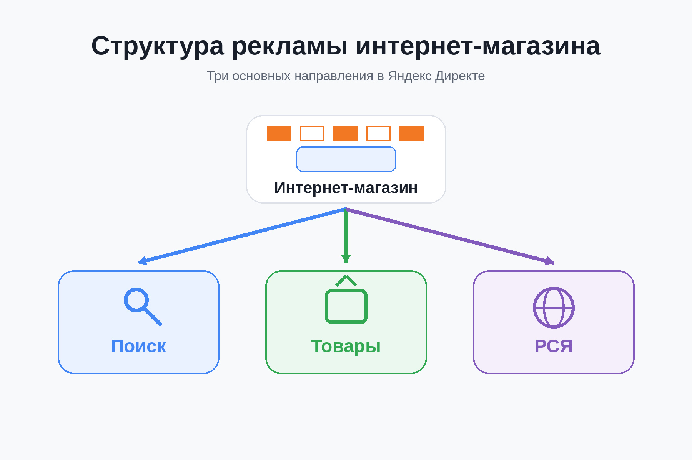
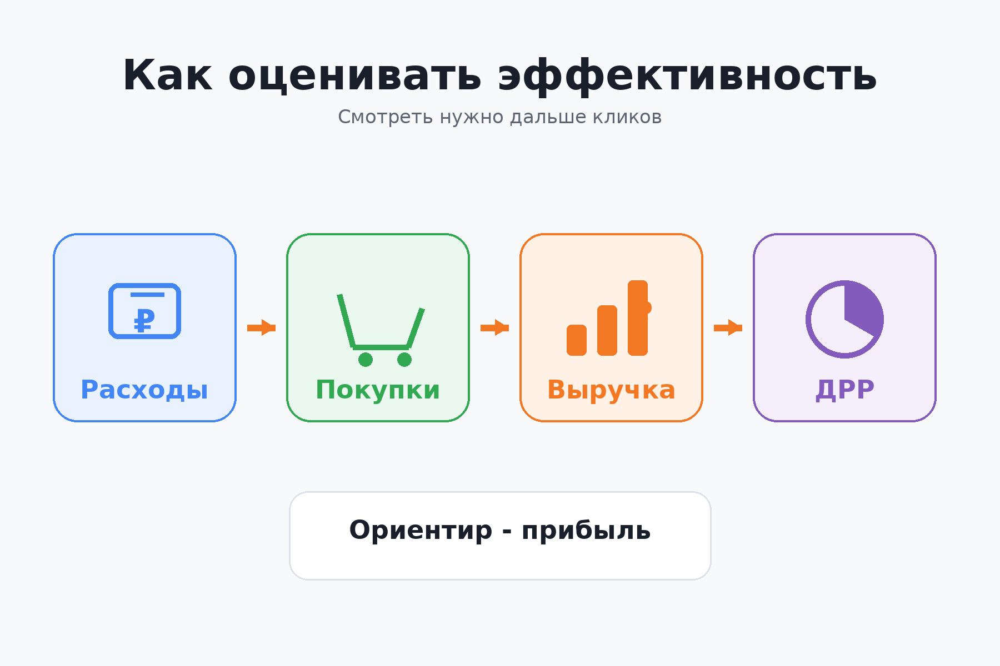

Блог о платном трафике
Контекстная реклама интернет-магазина: как получать продажи из Яндекс Директа
Контекстная реклама интернет-магазина должна приводить не просто посетителей, а оплаченные заказы с приемлемой для бизнеса экономикой. Поэтому настройка начинается не с объявлений, а с каталога товаров, аналитики, маржинальности и понимания допустимой стоимости привлечения покупателя.
Для e-commerce в Яндекс Директе сейчас особенно важны товарные объявления, страницы каталога, фид, Поиск и РСЯ. Яндекс позволяет создавать рекламу товаров автоматически на основе сайта или товарного фида и показывать ее в Поиске, товарной галерее и Рекламной сети.
При этом оценивать результат интернет-магазина только по кликам, CTR или даже количеству добавлений в корзину недостаточно. Основные показатели находятся ближе к деньгам: покупки, выручка, стоимость заказа, ДРР и прибыль.
Что дает контекстная реклама интернет-магазину
Главное преимущество Яндекс Директа для интернет-магазина - возможность работать с уже существующим спросом.
Человек ищет конкретную модель смартфона, диван определенного размера, косметику конкретного бренда или просто вводит запрос «купить кофемашину». В этот момент магазин может показать ему товар и привести сразу на подходящую карточку или категорию.
Одновременно реклама может решать несколько задач:
- привлекать покупателей из поиска;
- продвигать отдельные товары и целые категории;
- показываться в товарной галерее;
- возвращать посетителей, которые смотрели товары, но не купили;
- находить новую аудиторию через РСЯ;
- увеличивать продажи наиболее выгодных категорий;
- масштабировать товары, которые уже показывают хорошую экономику.
Поэтому для магазина с большим каталогом я обычно рассматриваю Директ не как одну рекламную кампанию, а как несколько механизмов привлечения покупателей.
Что нужно подготовить до запуска рекламы
Яндекс Метрика и электронная коммерция
Первое, что нужно сделать - настроить нормальную аналитику.
Для интернет-магазина стандартной цели «посетил страницу оформления заказа» мало. Желательно передавать в Яндекс Метрику данные электронной коммерции.
Метрика позволяет видеть покупки, товары в заказах, доход, популярные категории, среднюю стоимость заказа и другие показатели e-commerce. Эти данные можно использовать и при оптимизации рекламы.
Минимально я бы отслеживал:
- просмотр товара;
- добавление в корзину;
- начало оформления заказа;
- покупку;
- сумму заказа.
Если значительная часть заказов подтверждается менеджером или оплачивается позднее, полезно дополнительно связывать рекламу с реальными продажами, а не ориентироваться исключительно на действия внутри сайта.
статья «Конверсия в Яндекс Директ: что это и как ее считать»
Экономика магазина
До запуска нужно определить, сколько магазин в принципе может платить за продажу.
Допустимая стоимость заказа зависит от:
- маржинальности;
- среднего чека;
- повторных покупок;
- расходов на доставку;
- возвратов;
- скидок;
- комиссии платежных систем;
- других переменных расходов.
Поэтому ориентир вида «заказ должен стоить не больше 1 000 рублей» без понимания экономики практически бесполезен.
Для товара с высокой маржой такая стоимость может быть отличным результатом. Для другого товара даже 300 рублей могут оказаться слишком дорогим привлечением.
Сам интернет-магазин
Директ не исправляет слабый сайт.
Перед запуском я проверяю:
- удобно ли пользоваться магазином с телефона;
- понятны ли цена и наличие;
- указаны ли условия доставки;
- легко ли добавить товар в корзину;
- нет ли лишних шагов при оформлении;
- есть ли характеристики и фотографии;
- соответствует ли карточка товара тому, что обещает реклама;
- быстро ли загружаются основные страницы.
Особенно критична карточка товара. Если пользователь ищет конкретную модель, переходит из рекламы и попадает на общую страницу каталога, часть потенциальных покупателей будет потеряна.
Фид - основа товарной рекламы
Если ассортимент большой или регулярно меняется, один из главных технических элементов рекламы - товарный фид.
Фид содержит структурированные данные о товарах: название, ID, цену, изображение, ссылку, категорию, наличие и другие характеристики.
Яндекс использует эти данные для автоматического создания товарных объявлений. Для интернет-магазинов Яндекс рекомендует YML-фид, особенно если ассортимент большой и часто обновляется.
Например, вместо ручного создания рекламы для нескольких тысяч позиций магазин передает Директу каталог. Из него рекламная система уже формирует объявления под конкретные товары.
Это особенно удобно, когда постоянно меняются:
- цены;
- остатки;
- ассортимент;
- акции;
- категории.
Если фид подключен по ссылке и автоматически обновляется вместе с каталогом, в рекламу можно передавать актуальные товарные данные.

Какие кампании использовать для интернет-магазина
Универсальной схемы, одинаково подходящей любому магазину, нет. Структура зависит от размера каталога, спроса, бюджета и накопленной статистики.
Но основные направления обычно следующие.
Товарная кампания
Товарная кампания подходит для автоматизированного продвижения ассортимента. Директ может получать информацию с сайта или из фида, создавать объявления и показывать их в Поиске, товарной галерее и РСЯ.
Такой вариант удобен для быстрого запуска и магазинов, где много товарных позиций.
При этом я бы не объединял весь ассортимент бездумно только потому, что технически это возможно.
Товары могут сильно отличаться по:
- марже;
- цене;
- популярности;
- наличию;
- сезонности;
- конверсии;
- допустимому ДРР.
Если одна категория приносит магазину намного больше прибыли, чем другая, это должно учитываться и при управлении рекламой.
Единая перфоманс-кампания
Для более детальной настройки используется Единая перфоманс-кампания. В ней можно работать с товарными объявлениями, страницами каталога, комбинаторными объявлениями и другими форматами, управлять местами показа и таргетингами.
Товарные объявления можно создавать из фида или непосредственно на основе сайта.
Я обычно использую более детальную структуру, когда нужно отдельно управлять категориями, аудиториями, местами показа или разными группами товаров.
Поисковая реклама
Поиск остается особенно ценным для сформированного спроса.
Например:
- купить беговую дорожку;
- холодильник Bosch KGN39 купить;
- купить японскую косметику;
- диван 200х160 с ящиком;
- купить тормозные колодки Brembo.
Чем точнее человек описывает нужный товар, тем лучше можно понять его намерение.
Но современный Яндекс Директ уже нельзя сводить к старой схеме «собрать максимально большое семантическое ядро и создать объявление под каждый ключ». Алгоритмы и автотаргетинг играют заметно большую роль.
Задача специалиста - правильно разделить спрос, подготовить релевантные предложения, передать системе качественные данные о конверсиях и контролировать реальные поисковые запросы.
статья «Как настроить рекламу в Яндекс Директ в 2026 году»
РСЯ и возврат посетителей
Пользователь интернет-магазина далеко не всегда покупает с первого посещения.
Он может:
- Посмотреть несколько товаров.
- Уйти к конкурентам.
- Почитать отзывы.
- Сравнить цены.
- Вернуться через несколько дней.
РСЯ позволяет дополнительно работать с такой аудиторией и показывать рекламу за пределами обычного поиска.
В том числе можно использовать данные Яндекс Метрики и работать с пользователями, которые уже посещали сайт, смотрели товары или выполняли определенные действия.

Как делить товары внутри рекламных кампаний
Одна из ошибок интернет-магазина - относиться ко всем товарам одинаково.
Представим каталог из 10 000 позиций. Среди них могут быть:
- товары-лидеры;
- позиции почти без маржи;
- товары с высокой маржинальностью;
- новые категории;
- сезонные товары;
- дорогие позиции с длинным циклом выбора;
- товары, которые покупают практически сразу;
- позиции, которых регулярно нет в наличии.
Если объединить их в одну систему без дальнейшего анализа, рекламный бюджет может распределяться совсем не так, как выгодно бизнесу.
Поэтому при достаточном объеме данных имеет смысл анализировать результат хотя бы по категориям, а иногда и по отдельным группам товаров.
Например, категория может давать много заказов и выглядеть отлично по CPO, но приносить мало прибыли. Другая категория дает меньше продаж, зато каждый заказ намного выгоднее.
Количество покупок без информации о выручке и марже не показывает всей картины.
Какие показатели смотреть
Для контекстной рекламы интернет-магазина я бы разделил показатели на рекламные и бизнесовые.
| Показатель | Что показывает |
|---|---|
| Клики | Сколько переходов получила реклама |
| CPC | Среднюю стоимость перехода |
| CR | Какая доля трафика совершает нужное действие |
| CPO / CPA покупки | Сколько стоит одна покупка |
| Выручка | Сколько денег принесли заказы |
| ДРР | Какую долю выручки составили расходы на рекламу |
| Средний чек | Среднюю сумму покупки |
| Прибыль | Реальный финансовый результат с учетом экономики магазина |
CTR и CPC нужны для диагностики рекламных кампаний, но сами по себе они не отвечают на вопрос, выгодна реклама или нет.
Для e-commerce намного полезнее цепочка:
расходы → покупки → выручка → ДРР → прибыль.
Именно поэтому электронная коммерция в Метрике дает интернет-магазину намного больше информации, чем одна цель на посещение страницы «Спасибо».

Примеры из моих проектов
В интернет-магазинах особенно хорошо видно, почему рекламу нужно оценивать по конечному результату.
В проекте «Мясницкий ряд» через рекламу было получено 69 покупок со стоимостью одной покупки 408 ₽.
кейс интернет-магазина «Мясницкий ряд»
В другом проекте, связанном с продажей японской косметики, при расходах на рекламу около 64 000 ₽ была зафиксирована выручка около 656 000 ₽.
кейс интернет-магазина японской косметики
Эти проекты отличаются ассортиментом, средним чеком и поведением покупателей. Поэтому я не использую одну «нормальную стоимость заказа» для всех магазинов.
Сначала определяется экономика конкретного бизнеса, а уже относительно нее оцениваются рекламные показатели.
Другие проекты по Яндекс Директу собраны в разделе с кейсами на главной странице сайта.
Как оптимизировать рекламу после запуска
Основная работа начинается после накопления статистики.
Я смотрю не только на кампании целиком, но и на отдельные элементы:
- категории товаров;
- товарные группы;
- запросы;
- аудитории;
- места размещения;
- объявления;
- устройства;
- регионы;
- периоды;
- конечные покупки и выручку.
Дальше задача довольно простая по логике: уменьшать расходы там, где деньги не возвращаются, и усиливать связки, которые показывают рабочую экономику.
Но оптимизация не всегда происходит непосредственно в Директе.
Допустим, реклама приводит заинтересованных пользователей, но карточка товара конвертирует плохо. Тогда снижение ставки не решит проблему. Возможно, нужно доработать карточку, условия доставки, цену, оформление заказа или мобильную версию сайта.
Поэтому я рассматриваю рекламу интернет-магазина вместе с посадочными страницами и воронкой, а не как отдельный рекламный кабинет.
Основные ошибки при рекламе интернет-магазина
Запуск без электронной коммерции
Есть информация о кликах и корзинах, но нет нормальных данных о покупках и выручке.
В итоге невозможно понять, какие товары действительно приносят деньги.
Продвижение всего каталога одинаково
Разные категории имеют разную маржинальность и разный покупательский спрос.
Распределять бюджет только по количеству кликов или заказов опасно.
Неактуальный фид
Если в рекламе отображается неправильная цена, недоступный товар или старая ссылка, это напрямую влияет на качество трафика и конверсию.
Оценка только по дешевой цене клика
Дешевый трафик не обязательно выгодный.
100 переходов по 20 ₽ без покупок хуже, чем более дорогие переходы, которые заканчиваются заказами.
Оптимизация на слишком простую цель
Если алгоритму указать в качестве основного результата просмотр страницы или другое легкое действие, система будет искать пользователей, склонных выполнять именно его.
Для интернет-магазина по мере накопления статистики сигнал лучше приближать к реальной покупке.
статья «Конверсия в Яндекс Директ»
Игнорирование карточек товаров
Даже качественно настроенная реклама не заставит человека купить товар на неудобном или вызывающем недоверие сайте.
Иногда лучший способ улучшить ДРР - не менять кампанию, а исправить страницу товара.
Сколько нужно денег на контекстную рекламу интернет-магазина
Универсального минимального бюджета нет.
Он зависит от:
- ниши;
- количества категорий;
- региона;
- стоимости клика;
- конверсии магазина;
- среднего чека;
- количества продаж, необходимого алгоритмам для обучения.
Для товарных кампаний Яндекс рекомендует устанавливать бюджет, которого достаточно как минимум для 10 конверсий в неделю, и предупреждает, что автоматической стратегии требуется время для обучения.
Поэтому бюджет разумнее считать от конкретной ниши и прогнозируемого объема трафика, а не брать универсальную сумму из чужого кейса.
Когда контекстная реклама интернет-магазина работает лучше всего
Хорошая исходная ситуация выглядит так:
- товар уже имеет спрос;
- цена конкурентоспособна;
- есть понятная доставка;
- карточки товаров нормально оформлены;
- каталог актуален;
- настроена аналитика;
- бизнес знает свою маржинальность;
- рекламный бюджет позволяет получить статистику.
Если этих условий нет, проблема может появиться еще до настройки Директа.
Реклама способна быстро привести целевой трафик, но она не создает конкурентное предложение вместо самого магазина.
FAQ
Можно ли рекламировать интернет-магазин без товарного фида?
Да. Яндекс Директ умеет находить товары непосредственно на сайте. Но для большого или часто обновляемого каталога полноценный автоматически обновляемый фид обычно дает больше контроля над ассортиментом, ценами и наличием.
Что лучше для магазина: Поиск или товарная реклама?
Чаще всего их не нужно противопоставлять. Товарные форматы хорошо работают с ассортиментом и конкретными предложениями, а поисковые кампании позволяют отдельно работать со сформированным спросом и нужными группами запросов.
Нужна ли РСЯ интернет-магазину?
РСЯ полезна для дополнительного охвата и повторного контакта с пользователями. Особенно если покупатель сравнивает несколько вариантов и принимает решение не сразу.
Что считать основной конверсией?
Для полноценного интернет-магазина основной бизнес-результат - покупка. Добавление в корзину, просмотр товара и начало оформления полезны для анализа воронки, но не заменяют реальные заказы.
Что важнее: CPO или ДРР?
Оба показателя полезны, но отвечают на разные вопросы. CPO показывает стоимость заказа, а ДРР связывает рекламные расходы с полученной выручкой. Если товары сильно различаются по цене, одной стоимости заказа часто недостаточно.
Вывод
Контекстная реклама интернет-магазина лучше всего работает как система: актуальный каталог и фид передают информацию о товарах, Яндекс Директ приводит аудиторию, Метрика фиксирует покупки и выручку, а дальнейшая оптимизация строится вокруг реальной экономики.
Для небольшого магазина можно начать с относительно простой структуры. При большом ассортименте уже требуется разделять категории, контролировать товарные данные, работать с Поиском, товарными форматами и РСЯ и оценивать результат не по кликам, а по продажам и ДРР.
Именно такая схема позволяет постепенно переносить рекламный бюджет из просто активных кампаний в те товары и категории, которые действительно приносят магазину деньги.